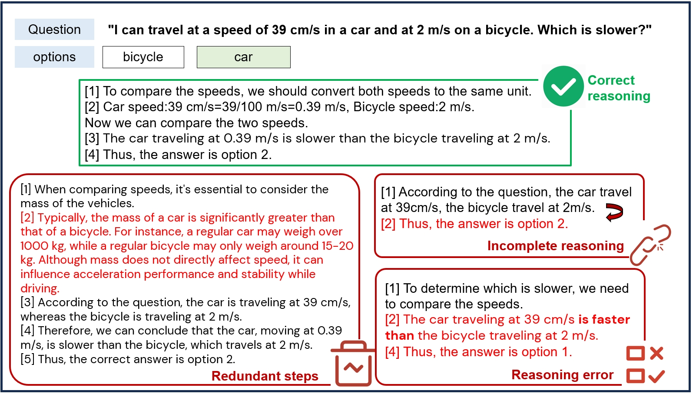
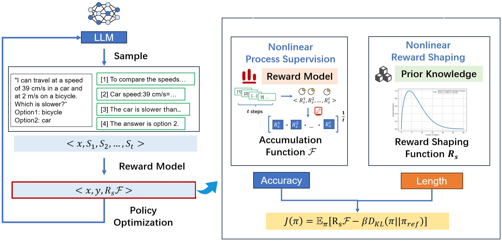
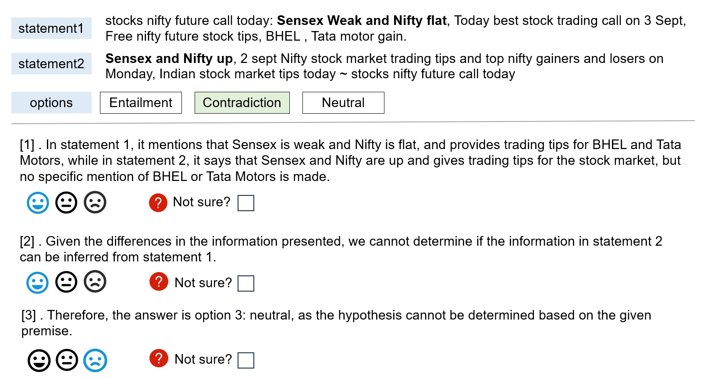
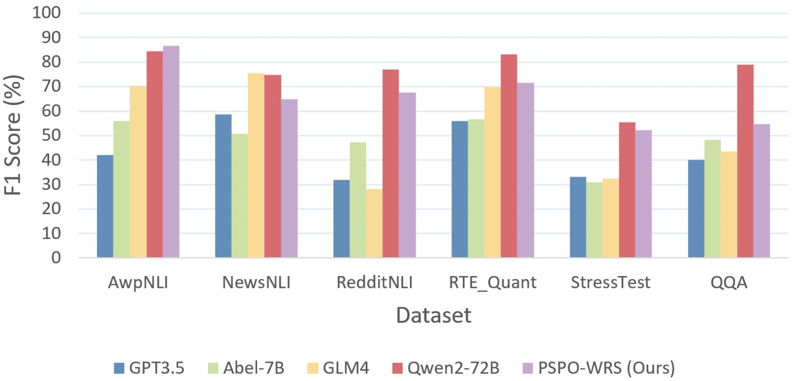

PSPO*: An Effective Process-supervised Policy Optimization for Reasoning Alignment
📝 Introduction
PSPO*: An Effective Process-supervised Policy Optimization for Reasoning Alignment is a novel process supervision paradigm, which systematically outlines the workflow from reward model training to policy optimization, and highlights the importance of nonlinear rewards in process supervision. Based on PSPO*, we develop the PSPO-WRS, which considers the number of reasoning steps in determining reward scores and utilizes an adjusted Weibull distribution for nonlinear reward shaping. Experimental results on six mathematical reasoning datasets demonstrate that PSPO-WRS consistently outperforms current mainstream models.
💡Motivation
- Background
- Quantifying an accurate reasoning process is crucial for effectively addressing the complex reasoning task. Using process supervision to achieve reasoning alignment is considered an effective way to quantifying reasoning process.
- In process supervision, each step receives precise supervision. It provides feedback for each individual step in a chain-of-thought and rewards the model for aligning with the human-approved reasoning process
- Problem of existed Process supervision methods
- The implementation of process supervision involves training process-supervised reward models (PRMs) and computing a single PRM score by aggregating scores from multiple reasoning chains. However, most current methods overlook the impact of the length of the reasoning chain on the PRM score.
- As illustrated in the above figure, inaccurate reasoning chains those that are excessively long or short can lead to wrong outcomes.Consequently, we aim to develop more effective process supervision methods to address this issue.
🔍Methodology
Similar to the standard RLHF paradigm, process supervision based on human feedback consists of two main stages. The first stage is learning the reward model. The second stage is optimizing the policy based on the learned reward model. We provide a detailed introduction to these two stages, given the characteristics of process supervision. Additionally, we propose PSPO*, a novel paradigm for process supervision to achieve reasoning alignment. PSPO* encompasses the entire workflow for process supervision from reward model training to policy optimization. This paradigm includes a nonlinear accumulation function that is linked to the accuracy of reasoning chains. It also features nonlinear reward shaping that adjusts rewards based on the length of the reasoning chains.
Building upon PSPO*, we propose the PSPO-WRS method, which utilizes a nonlinear reward accumulation function correlated with the accuracy and quantity of reasoning steps, and employs adjusted Weibull distribution for nonlinear reward shaping. Experimental results demonstrate the effectiveness of PSPO-WRS and further validate the correctness of the PSPO* framework.
📋Human Data Collection
- Step Labelling Criteria Each reasoning step is evaluated and assigned a label based on its correctness: ‘positive’(score of ‘1’), ‘neutral’ (score of ‘0’), and ‘negative’ (score of ‘-1’). A step receives a positive score if it accurately meets logical and computational requirements, correctly interprets the task, and contributes to deriving the correct answer. A neutral score is awarded if the step is correct but does not aid in reaching the correct conclusion. Conversely, steps that contain logical ,computational, or factual inaccuracies, or are irrelevant to the given context and question, are assigned a negative score of -1
🔬Experimental Setups
Datasets
We adopt the MATH dataset, which includes AwpNLI, NewsNLI, RedditNLI, RTE-Quant, StressTest, and QQA datasets as reported by Chen et al. (2023) . These datasets are further expanded using the GPT-3.5 API.
Metrics and Parameters setting
The evaluation metric utilized is the average micro-F1 score on the test dataset because it balances precision and recall, providing a more comprehensive measure of model performance. We employ Abel-7B as the baseline model. The reward model is trained on the BERT-large. The reward model is trained over 10 epochs with a learning rate of 2e-5, a warmup rate of 0.05, and a maximum sequence length of 256. PPO training uses Lora with a learning rate of 1.41e-5 and a maximum of 512 tokens. On a dataset of 5470 entries, each epoch averages 55 hours on four NVIDIA A100 GPUs.
📈Overall Results
| Models | AwpNLI | NewsNLI | RedditNLI | RTE-Quant | StressTest | QQA |
|---|---|---|---|---|---|---|
| Llama2-7B (Touvron et al. 2023) | 1.47% | 0.47% | 0.40% | 0.86% | 1.36% | 3.70% |
| BLOOMZ (Muennighoff et al. 2023) | 48.04% | 54.46% | 37.20% | 47.64% | 31.22% | 51.85% |
| Abel-7B (Chern et al. 2023) | 55.82% | 50.75% | 47.20% | 56.67% | 30.87% | 48.14% |
| Llama3.1-8B (Dubey et al. 2024) | 66.18% | 62.91% | 39.60% | 48.93% | 13.04% | 50.62% |
| Qwen1.5-7B-chat (Yang et al. 2024) | 54.90% | 54.93% | 40.00% | 21.13% | 27.32% | 46.30% |
| CN-PPO (Liang et al. 2024) | 82.35% | 61.97% | 63.20% | 63.52% | 46.30% | 48.77% |
| PSPO-WRS (Ours) | 86.76% | 64.91% | 67.60% | 71.57% | 52.29% | 54.70% |
We conducted a comparative analysis of PSPO-WRS against mainstream ultra LLMs, as detailed in Figure 5. Across all evaluated datasets, the PSPO-WRS significantly outperformed GPT-3.5, relative to GLM4, our model showed slightly weaker performance on the NewsNLI dataset but exhibited superior performance on other datasets. Against the more robust reasoning capabilities of Qwen2-72B, PSPO-WRS also showed its strengths in the AwpNLI dataset and demonstrated comparable performance on additional datasets.